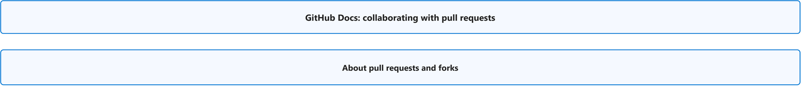
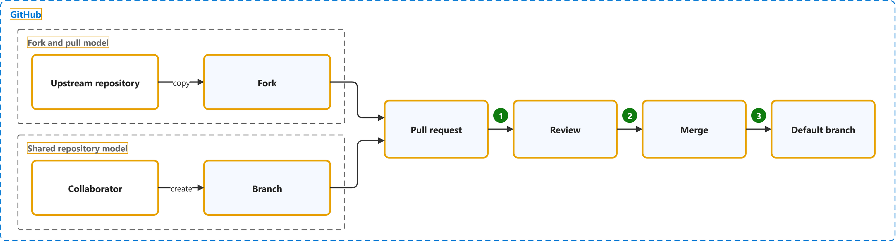

GitHub Docs: Collaborating with Pull Requests
Study notes on GitHub Docs. Each section links the official page it follows. Start from the figure: the framed terms are the ones to learn, and the table below it defines them in the same order, each with a citation linked to the passage and a Chinese translation in which each key word has the same colour as in the English. The main verb of each sentence has a red wavy underline, in the English and in the Chinese.
Overview

About pull requests and forks

| Term | Definition | 中文翻译 | Source |
|---|---|---|---|
| GitHub GitHub 平台 |
"GitHub is a platform that supports your entire software development process, from planning work to deploying and operating software." | GitHub 是一个平台，支持你的整个软件开发流程，从规划工作到部署和运营软件。 | GitHub, n.d., para. 1 |
| fork and pull model 复刻加拉取请求模式 |
"In the fork and pull model, anyone can fork an existing ("upstream") repository if they have read access and the owner of the upstream repository allows it." | 在复刻加拉取请求模式中，任何人都可以复刻现有的（“上游”）仓库，前提是他们拥有读取权限，并且上游仓库的所有者允许这样做。 | GitHub, n.d., "Fork and pull model" section, para. 1 |
| upstream repository 上游仓库 |
"Forks are repositories that start as copies of another repository, called the upstream repository." | 复刻是一些仓库，它们最初是另一个仓库的副本，该仓库称为上游仓库。 | GitHub, n.d., para. 1 |
| fork 复刻（Fork） |
"A fork is a separate repository with its own settings and collaboration space." | 复刻是一个独立的仓库，拥有自己的设置和协作空间。 | GitHub, n.d., "What makes forks distinct from branches" section, para. 1 |
| shared repository model 共享仓库模式 |
"In the shared repository model, collaborators have push access to a single shared repository and create topic branches when they need to make changes." | 在共享仓库模式中，协作者对单个共享仓库拥有推送权限，并在需要进行更改时创建主题分支。 | GitHub, n.d., "Shared repository model" section, para. 1 |
| collaborator 协作者 |
"A collaborator is a person with read and write access to a repository who has been invited to contribute by the repository owner." | 协作者是对某个仓库拥有读写访问权限的人，此人已受仓库所有者邀请参与贡献。 | GitHub, n.d., "collaborator" section, para. 1 |
| branch 分支 |
"A "branch" is a line of development. The most recent commit on a branch is referred to as the tip of that branch." | “分支”是一条开发线。分支上最近的一次提交被称为该分支的末端（tip）。 | Git, n.d., "branch" entry |
| pull request 拉取请求（PR） |
"Pull requests are proposals to merge code changes into a project." | 拉取请求是一种提议：将代码更改合并到一个项目中。 | GitHub, n.d., para. 1 |
| review 代码审查 |
"Pull request reviews let people comment on changes, suggest improvements, and approve or request changes before code is merged." | 拉取请求审查让人们可以在代码合并之前对更改发表评论、提出改进建议，以及批准或请求更改。 | GitHub, n.d., para. 2 |
| merge 合并 |
"Merging takes the changes from one branch (in the same repository or from a fork), and applies them into another." | 合并会获取来自一个分支（位于同一仓库中或来自某个复刻）的更改，并将其应用到另一个分支中。 | GitHub, n.d., "merge" section, para. 1 |
| default branch 默认分支 |
"The base branch for new pull requests and code commits in a repository. Each repository has at least one branch, which Git creates when you initialize the repository. The first branch is usually called main, and is often the default branch." | 仓库中新拉取请求和代码提交的基础分支。每个仓库至少有一个分支，该分支由 Git 在你初始化仓库时创建。第一个分支通常称为 main，并且通常是默认分支。 | GitHub, n.d., "default branch" section, para. 1 |